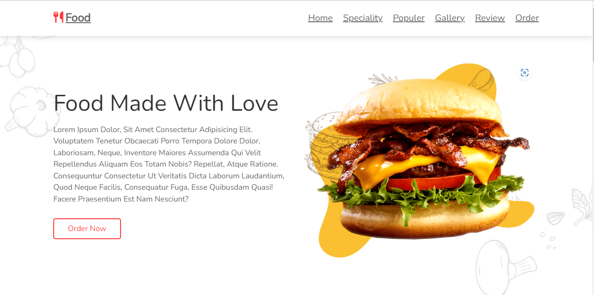
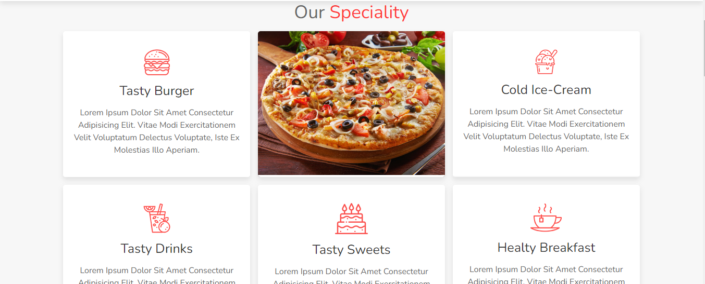
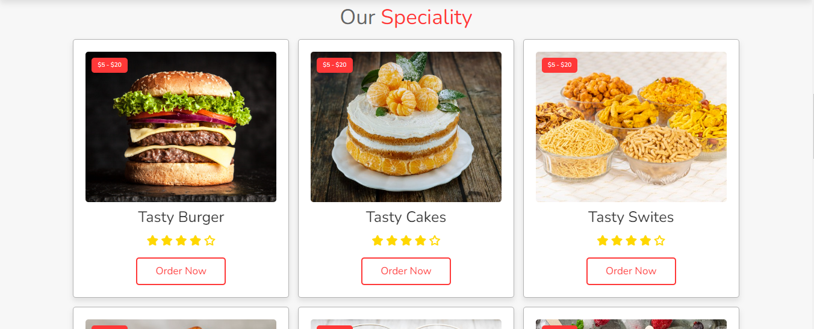
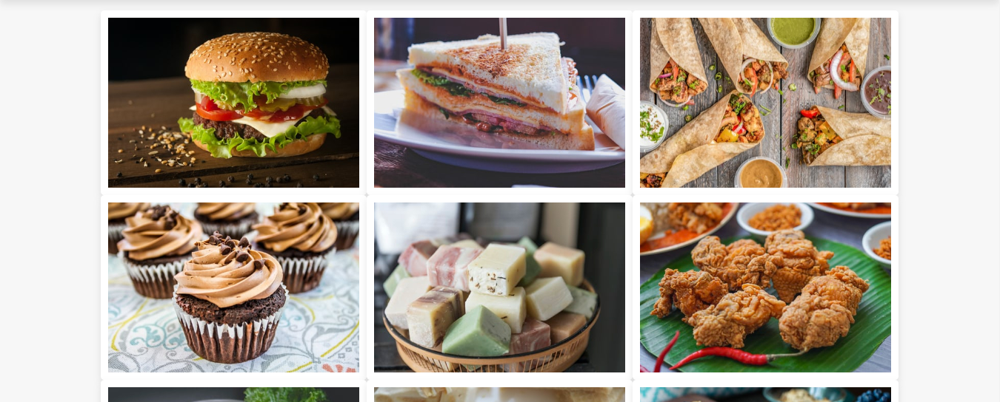

home
Food Made With Love

  
✔︎ I Make This Website Using HTML, Then Design it Using Custom CSS,
✔︎ Then Used JavaScript For More Attractive
✔︎ And Using Media Query To be Responsive For All Devices
Visit Website for More Info